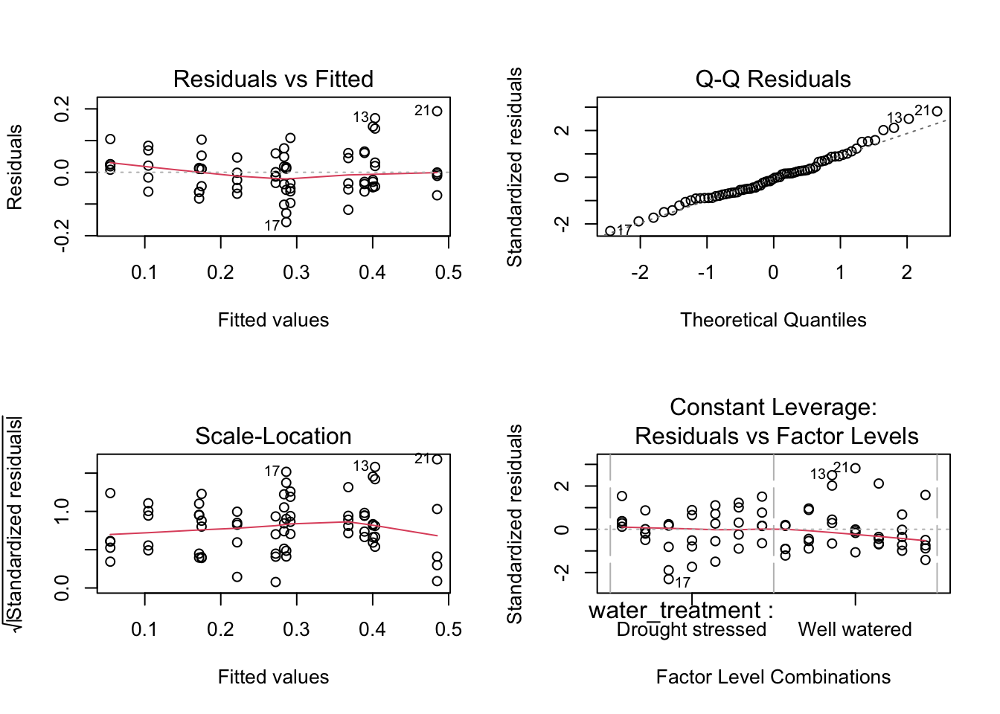
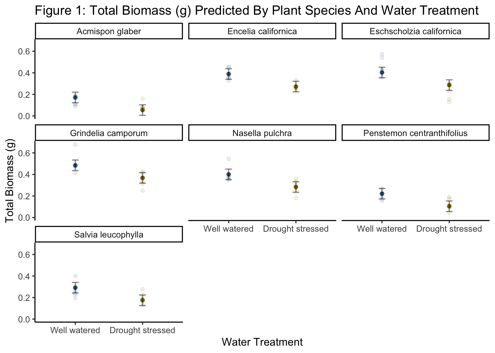

# general use
library(tidyverse)
library(readxl)
library(here)
library(janitor)
# visualizing pairs
library(GGally)
# model selection
library(MuMIn)
# model predictions
library(ggeffects)
# model tables
library(gtsummary)
library(flextable)
library(modelsummary)
drought_exp <- read_xlsx(path = here("data",
"Valliere_etal_EcoApps_Data.xlsx"),
sheet = "First Harvest")Homework 03
# cleaning
drought_exp_clean <- drought_exp %>%
clean_names() %>% # nicer column names
mutate(species_name = case_when( # adding column with species scientific names
species == "ENCCAL" ~ "Encelia californica", # bush sunflower
species == "ESCCAL" ~ "Eschscholzia californica", # California poppy
species == "PENCEN" ~ "Penstemon centranthifolius", # Scarlet bugler
species == "GRICAM" ~ "Grindelia camporum", # great valley gumweed
species == "SALLEU" ~ "Salvia leucophylla", # Purple sage
species == "STIPUL" ~ "Nasella pulchra", # Purple needlegrass
species == "LOTSCO" ~ "Acmispon glaber" # deerweed
)) %>%
relocate(species_name, .after = species) %>% # moving species_name column after species
mutate(water_treatment = case_when( # adding column with full treatment names
water == "WW" ~ "Well watered",
water == "DS" ~ "Drought stressed"
)) %>%
relocate(water_treatment, .after = water) # moving water_treatment column after water#correlations
ggpairs(drought_exp_clean, # data frame
columns = c("leaf_dry_weight_g", # columns to visualize
"sla",
"shoot_g",
"root_g",
"total_g"),
upper = list(method = "pearson")) + # calculating Pearson correlation coefficient
theme_bw() + # cleaner theme
theme(panel.grid = element_blank()) # getting rid of gridlines
# null model
model0 <- lm(total_g ~ 1, # formula
data = drought_exp_clean) # data frame
# saturated model
model1 <- lm(total_g ~ sla + water_treatment + species_name,
data = drought_exp_clean)
# model 2: total mass as predicted by specific leaf area and water treatment
model2 <- lm(total_g ~ sla + water_treatment,
data = drought_exp_clean)
# model 3: total mass as predicted by specific leaf area and species name
model3 <- lm(total_g ~ sla + species_name,
data = drought_exp_clean)
# model 4: total mass as predicted by species name and water treatments
model4 <- lm(total_g ~ water_treatment + species_name,
data = drought_exp_clean)
#diagnostics for model 4
par(mfrow = c(2, 2))
plot(model4)
model.sel(model0,
model1,
model2,
model3,
model4)Model selection table
(Int) sla spc_nam wtr_trt df logLik AICc delta weight
model4 0.05455 + + 9 88.598 -156.2 0.00 0.772
model1 0.07994 -0.0002475 + + 10 88.741 -153.8 2.44 0.228
model3 -0.03315 0.0012900 + 9 72.538 -124.1 32.12 0.000
model2 0.04670 0.0012810 + 4 52.220 -95.8 60.37 0.000
model0 0.27900 2 39.580 -75.0 81.22 0.000
Models ranked by AICc(x) MODEL 4 IS BEST
summary(model4)
Call:
lm(formula = total_g ~ water_treatment + species_name, data = drought_exp_clean)
Residuals:
Min 1Q Median 3Q Max
-0.157087 -0.046953 -0.003733 0.041244 0.192657
Coefficients:
Estimate Std. Error t value Pr(>|t|)
(Intercept) 0.05455 0.02451 2.225 0.02973 *
water_treatmentWell watered 0.11695 0.01733 6.746 5.90e-09 ***
species_nameEncelia californica 0.21774 0.03243 6.714 6.70e-09 ***
species_nameEschscholzia californica 0.23164 0.03243 7.143 1.22e-09 ***
species_nameGrindelia camporum 0.31335 0.03243 9.662 5.53e-14 ***
species_nameNasella pulchra 0.22881 0.03243 7.055 1.72e-09 ***
species_namePenstemon centranthifolius 0.05003 0.03243 1.543 0.12799
species_nameSalvia leucophylla 0.12020 0.03243 3.706 0.00045 ***
---
Signif. codes: 0 '***' 0.001 '**' 0.01 '*' 0.05 '.' 0.1 ' ' 1
Residual standard error: 0.07252 on 62 degrees of freedom
Multiple R-squared: 0.7535, Adjusted R-squared: 0.7257
F-statistic: 27.08 on 7 and 62 DF, p-value: < 2.2e-16Problem 1: Multiple linear regression - model selection and construction
- MODEL 4 IS BEST BASED ON TEST, CHECK DIAGNOSTICS
model_preds <- ggpredict(model4,
terms = c("water_treatment",
"species_name"))
model_preds_for_plotting <- model_preds %>%
rename(water_treatment = x, # renaming columns to make this easier to use
species_name = group)
ggplot() +
# underlying data
geom_point(data = drought_exp_clean,
alpha = 0.1,
aes(x = water_treatment,
y = total_g,
color = water_treatment)) +
# model prediction 95% CI ribbon
geom_point(data = model_preds_for_plotting,
aes(x = water_treatment,
y = predicted,
color = water_treatment),
alpha = 1) +
# model prediction lines
geom_errorbar(data = model_preds_for_plotting,
aes(x = water_treatment,
y = predicted,
ymin = conf.low,
ymax = conf.high,
fill = water_treatment),
width = 0.1,
alpha = 0.5) +
# cleaner theme
theme_classic() +
# creating different panels for species
facet_wrap(~species_name)+
theme(legend.position = "none")+
labs(x = "Water Treatment",
y = "Total Biomass (g)",
title = "Figure 1: Total Biomass (g) Predicted By Plant Species And Water Treatment") +
scale_color_manual(values = c("Well watered" = "steelblue4",
"Drought stressed" = "gold4"))
Problem 2: Affective visualization
Problem 3: Statistical critique